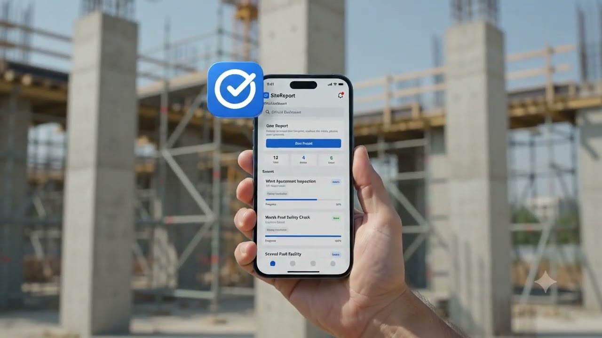
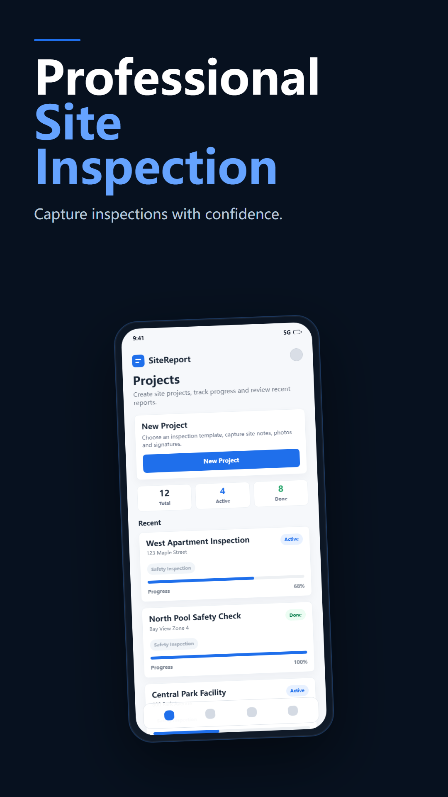
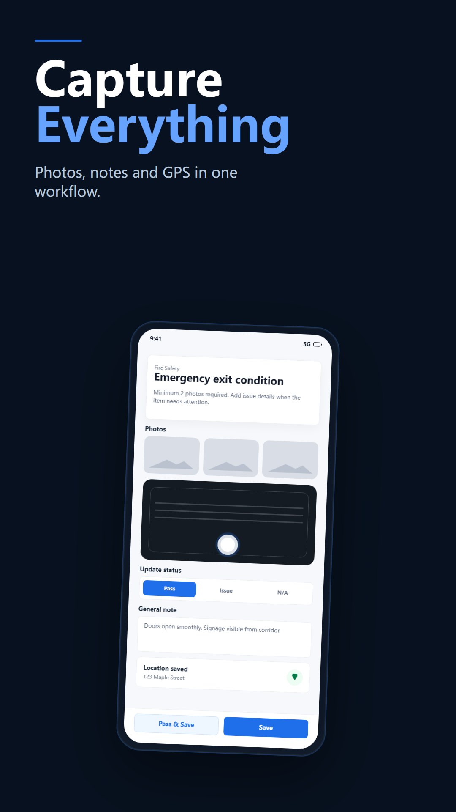
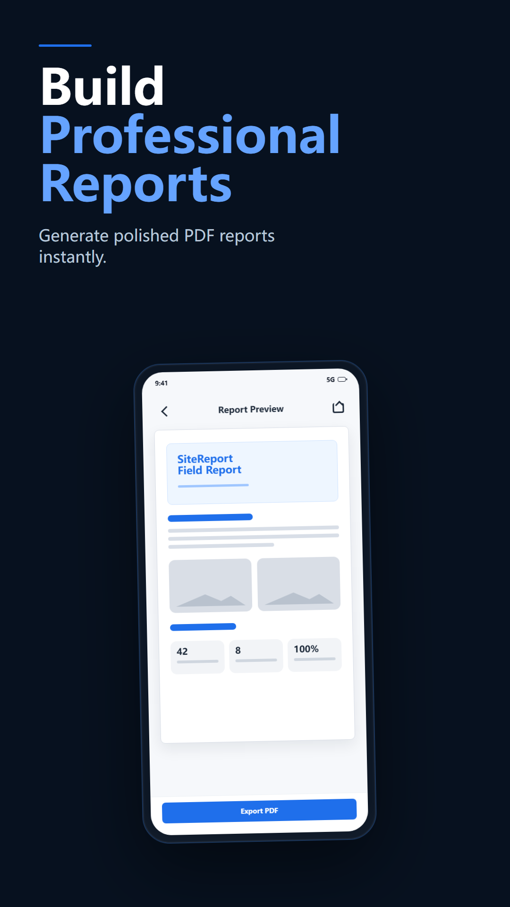
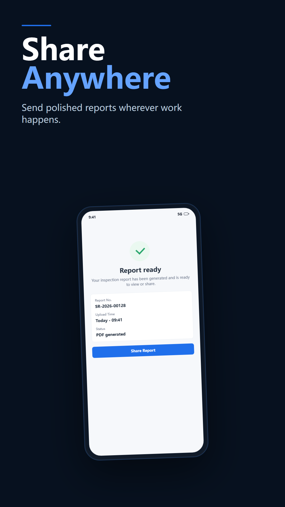

검사 프로젝트
현장 정보, 진행률, 사진과 보고서를 한곳에서 관리합니다.
현장 업무
필요할 때 바로 준비되는 현장 보고서
현장 증거를 기록하고 검사 흐름을 공유 가능한 보고서로 정리합니다.

Plan the inspection, capture evidence in context, and deliver a clear report without moving between separate tools.
현장 정보, 진행률, 사진과 보고서를 한곳에서 관리합니다.
가능한 경우 사진을 항목에 연결하고 메모, 시간, 위치를 기록합니다.
검사 데이터에서 구조화된 현장 보고서를 생성합니다.
현재 프로젝트의 실제 화면입니다.





현장 기록, 증거 정리, 보고서 전달을 위한 기능입니다.
현장 정보, 진행률, 사진과 보고서를 한곳에서 관리합니다.
Explore this feature재사용 가능한 계획과 템플릿으로 작업을 표준화합니다.
Explore this feature가능한 경우 사진을 항목에 연결하고 메모, 시간, 위치를 기록합니다.
Explore this feature발견 사항, 권고 사항과 서명 정보를 기록합니다.
Explore this feature검사 데이터에서 구조화된 현장 보고서를 생성합니다.
Explore this feature파일을 내보내고 설정한 서버로 전송합니다.
Explore this feature프로젝트, 증거와 보고서를 하나의 흐름으로 정리합니다.